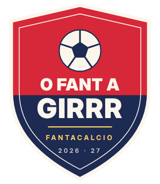
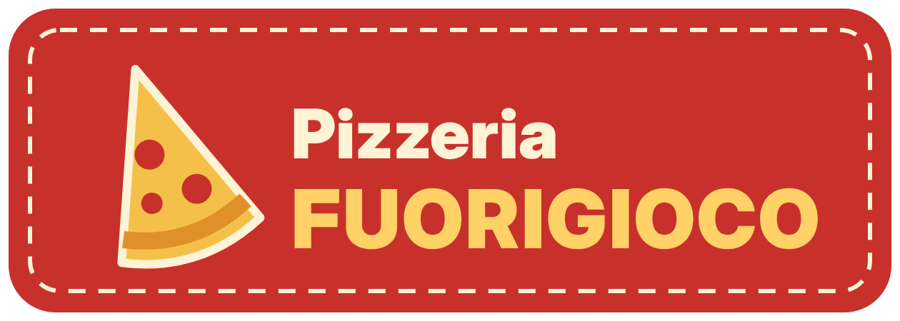
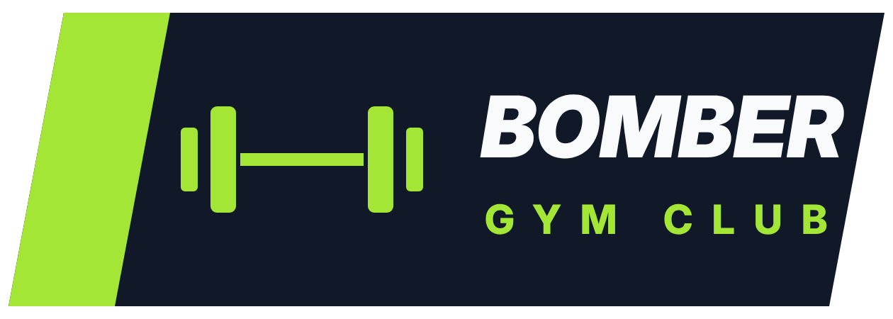
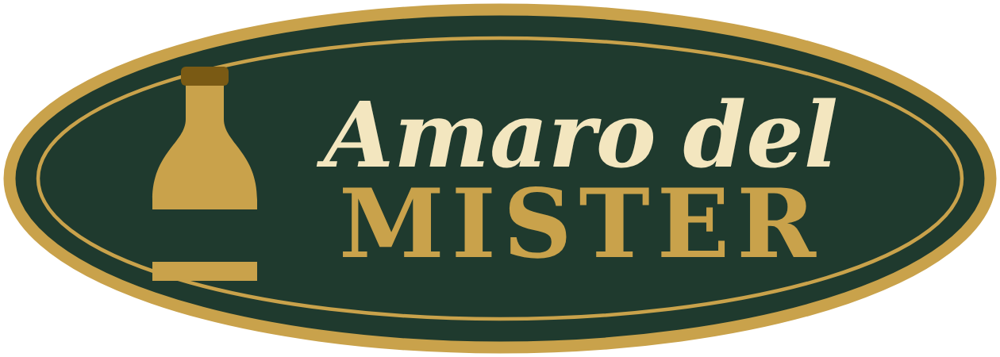

O FANT A GIRRR · 2026/27
O Girrr
La casa della nostra lega: tutto quello che serve, in un posto solo.

Spogliatoio
La tua rosa, la giornata, gli scambi e il Mercato Scambi, svincolati e infortunati.
ENTRA ›
O Giornale
del Girrr
del Girrr
Giornale
Il settimanale della lega: tutti i numeri da leggere o scaricare, quando vuoi.
SFOGLIA ›
Tabellone
Risultati e classifiche di campionato e Champions Cup, giornata per giornata.
GUARDA ›
Totogirrr
Totogirrr
Le scommesse della lega con fantacrediti: 500 a testa, quote su ogni partita e classifica degli scommettitori.
GIOCA ›
Gentilmente offerto da



O Girrr · fantacalcio 2026/27